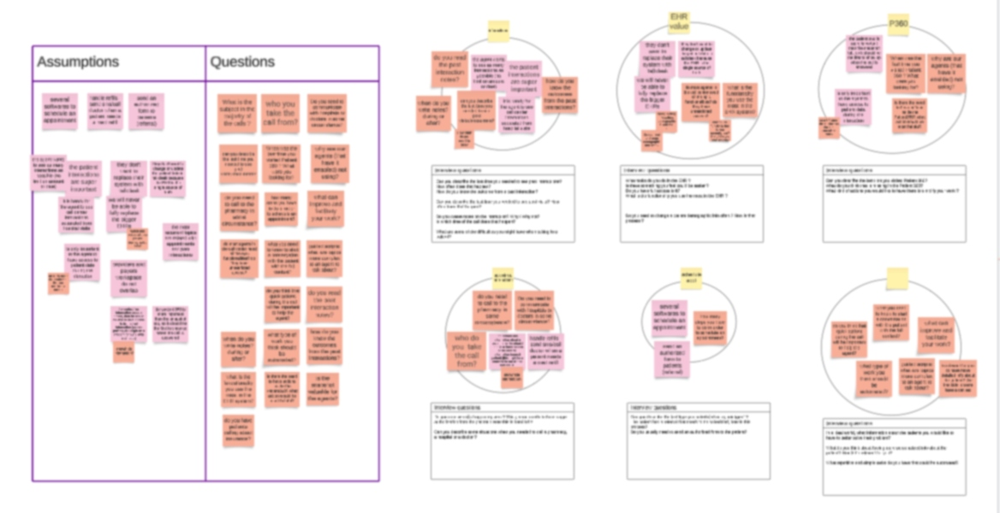
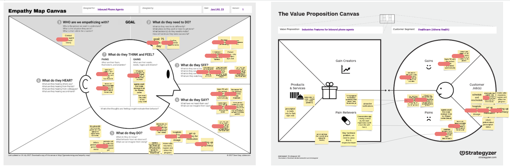
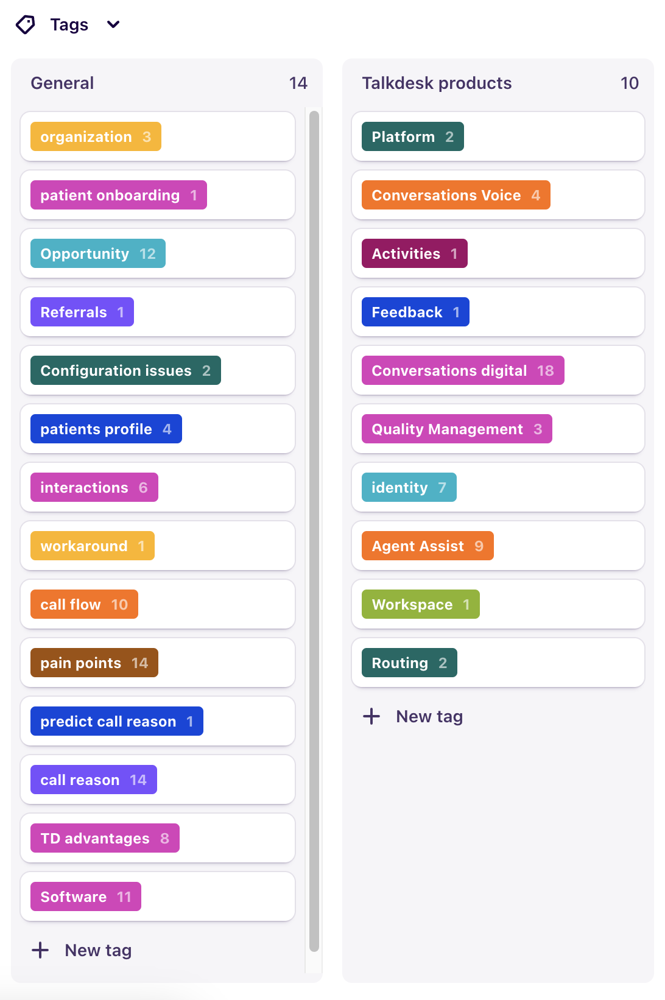
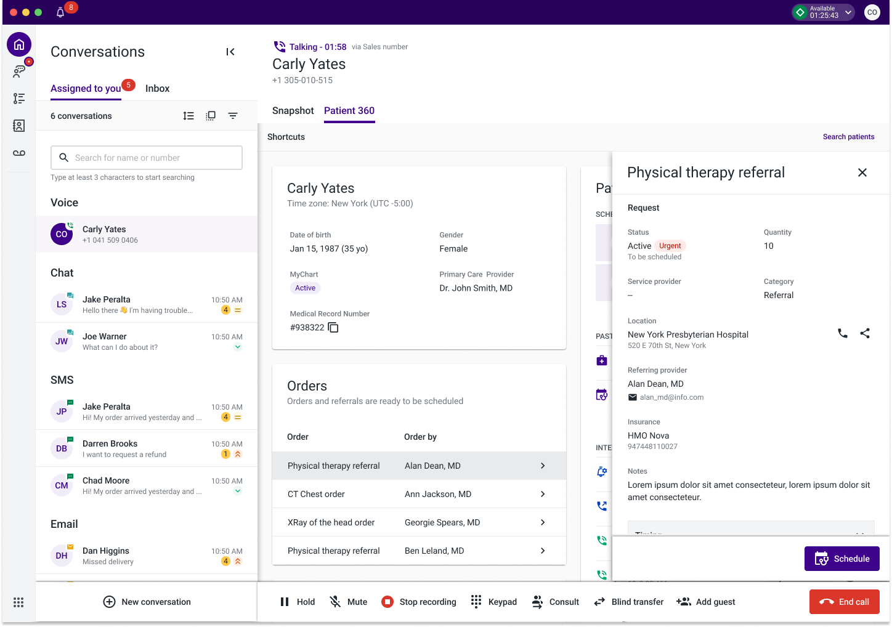

Year
2023
Role
UX Designer
Software
Dovetail, Lucid
I worked on this feature in 2023 as a Product Designer for Talkdesk.
Talkdesk for healthcare helps healthcare organizations improve business and clinical outcomes by synchronising the patient journey across any channel—web, email, SMS, mobile app, virtual agent, or live agent—resulting in more efficient communication and better patient experience.
The research team consisted of 2 designers, as the leader of this research initiative, I was responsible for reach out to clients, scheduling interviews with their agents, conducting them and analysing all at the end.
Patient 360 enables healthcare providers to effectively access a patient’s details, history, medication, among others.
When a call comes in, the healthcare agent can see all the patient info in one place, instead of looking for it in several systems and easily solve the patient issue.
With Pendo, an analytics tool, we found out that this page had a low visit rate. Few agents were entering and engaging with it.
P360 goal is to help agents solving their calls in a faster way and increase the number of calls they get per day, if the agents don’t use this page, something isn’t right.
Why agents don’t go to P360? What is missing? How can we add value to it?
To better understand the problem, we decided to conduct user interviews, we needed to speak with our clients agents. We selected agents that visited the page regularly, and agents that didn't visit the page at all. We used Pendo to check this information.
The research goal was to understand what agents felt about P360, what was missing there, what we could do to improve their daily tasks and getting to their goals in a more efficient way.
Increase conversion rate (currently at 7%)
Decrease the average hold time (currently at 1m6s)
Increase agents productivity
To begin defining a semi-structured interview, we held a workshop with project managers. During the workshop, they wrote down assumptions (untested ideas, hypotheses) and questions, which were later grouped by theme. This process established the guidelines for the interviews.
We used the interview findings to fill out the empathy map canvas, aligning everything we gathered. Later, the designers, project managers, and engineers came together to fill out the Value Proposition Canvas. This workshop helped us identify opportunities and improvements we could include in the next product release.
With the help of Dovetail, we have tagged the interview transcripts to group them by themes and summarise and organize the insights. These insights, along with excerpts from the transcripts the "How Might We" statements and the opportunities, form the research report that will be presented to the stakeholders.
Our research revealed that our P360 was insufficient for healthcare agents. These agents use multiple systems to perform various tasks. When presented with a system that provided the patient’s key information but few actions, they chose to skip Talkdesk altogether and use the necessary software instead. After all, agents need to solve calls in under two minutes, so every second counts.
We found out that agents need to call pharmacies, hospitals or doctors, while on the call with the patients.
The usual way of doing this was consuming a lot of time, and all of this with the call on hold.
One solution was putting in the P360 page a card with useful contacts and a direct way to call this numbers.
The lack of actions was another problem. So one of the ideas was to give them the possibility to schedule appointments directly.
Currently, the necessary changes have not been addressed. The opportunities discovered through this research will be prioritized and defined to be addressed in upcoming sprints.
Having the key members of the team, such as Project Managers or Tech Advisors, involved from the beginning of the research was of utmost importance. This ensured that they were able to gain a more comprehensive understanding of the problems faced by users and allowed them to develop more effective solutions. Furthermore, by being involved in the research process, these key team members were able to identify potential roadblocks and obstacles early on, which will help to save time and resources in the long run. Overall, their involvement from the beginning of the research was instrumental in the success of the project.